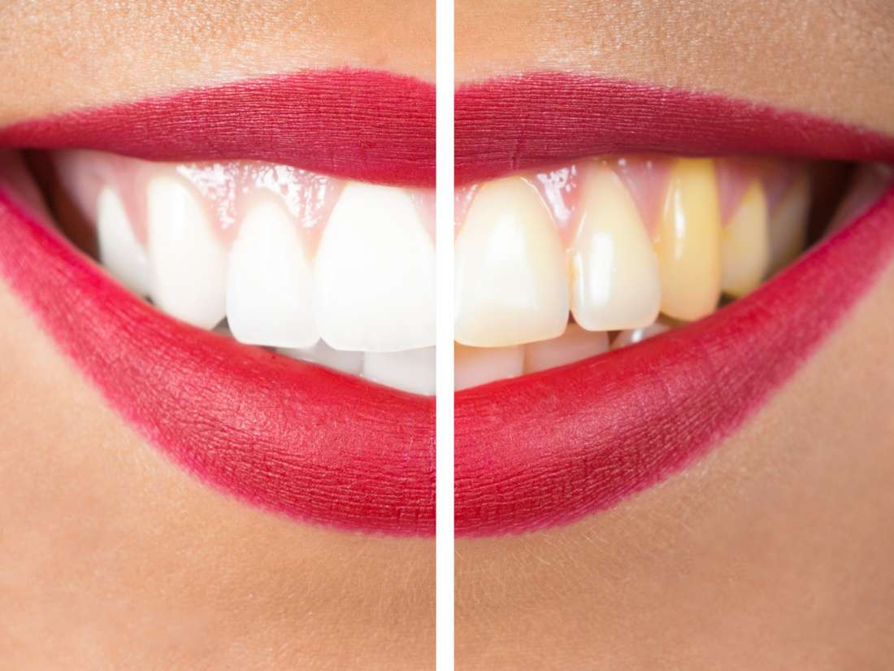

5 Ways to Get Rid of Yellow Teeth
by 5 Ways to Get Rid of Yellow Teeth
Last Updated - 5 Days Ago

Yellow Teeth
Is there anything that keeps you from grinning more than getting teeth? In case you’re would be ashamed to flaunt your smile, but rsquo &;another situation. Teeth may induce other people to earn a negative impression of you and can be embarrassing. They would believe that you don't brush your teeth awful breath, and you don’t even care for health. However, who can blame them? You inquire if you're doing something incorrect and will possibly doubt yourself. Rsquo & there; s a fantastic likelihood that you're doing something that you & rsquo In case you've got yellow teeth. Continue reading and find out more about the way to get rid of teeth.
What causes Yellow Teeth?
It’s to conclude that a individual who has teeth doesn't comply with a fantastic oral hygiene. But allow &rsquo the colour of a few people's teeth|the teeth people's colour can be nearer to the side. This is a great sign that this is the colour of your teeth if all your teeth have the identical colour. However, if a number of your teeth are yellow and some are white, then you have a issue with staining. Some of the causes of teeth that are yellowish are currently drinking tea and coffee, eating acidic foods like berries and citrus fruits smoking, and age.
Ways to Eliminate Yellow Teeth
1. Observe proper hygiene.
  Here passes Captain Obvious. But you need to have great hygiene to whiten teeth. Brush your teeth at least three times every day and make it a habit to floss. Bear in mind that the longer the food stays within the mouth and between your teeth, the greater the odds of whiten your teeth.
2. Try out home remedies.
  There are several home remedies for teeth. 1 remedy is baking soda. Make a paste by mixing baking soda. Use this glue. You might even rub orange peel (the internal, white part) in your teeth to eliminate yellowish teeth.
3. Utilize strips.
  Whitening strips are a few of the products which you could use to whiten teeth that are yellowish. A agent is contained by the strips. You are able to use strips per day. Another whitening product is Paint on Bleach. It operates by painting your teeth with the bleach like painting your nails with colours that are fancy.
4. Utilize mouthwash and toothpaste.
  Both of these products are which you could find at the regional pharmacy. These products are intended to help whiten teeth. Whitening toothpastes and mouthwashes are often effective for teeth.
5. Bleaching cleaning and trays.
  When coping with teeth the best move you can make is to visit with your dentist. Among the remedies for teeth your dentist will suggest for you is using whitening trays. These trays are molded to meet your mouth. They have a bleaching agent that also making your teeth whiter, eliminating the stains and coats the teeth. Additionally, there are other choices like veneers and engineering, in which dentures are put on the tooth's surface to improve its overall look. Ask your dentist about which choice is the right that you eliminate yellow teeth.
Around the net:
- How To Stop Yellow Teeth | The Way To Reduce Anything | Prevention
- Yellow teeth: The best way to Eliminate jagged teeth Oral Care - MSN Healthy Living
- Yellow Teeth and Additional Discoloration: Causes and Remedies
Leave a Comment:
Search
Advertisement